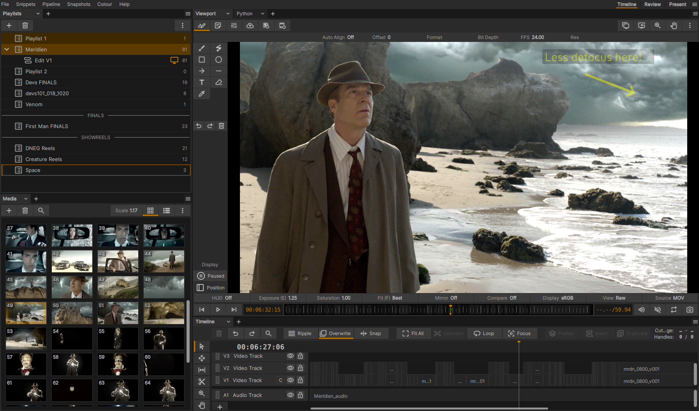

Getting Started¶
Building xSTUDIO¶
These user guide pages are built as part of the xSTUDIO product, so we assume that you or someone at your organisation has successfully built it! If not, build instructions for some of the most popular Linux distributions can be found in the README.md file in the root of xSTUDIO source code repository.
Launching xSTUDIO¶
To launch an empty xSTUDIO “Session” type xstudio on the Linux command line and press enter.
You can drag-and-drop files into the main window from Ivy Browser or the file system, or use the “Load” layout to add Shotgun playlists.
You can also launch xSTUDIO with one or more media files on the command line.
Note: If an xSTUDIO session is already running on your system, nothing will happen! This is because the xSTUDIO command checks if a session is already running on your system, and if so it will forward the command line options to the already running session. This is really useful for building playlists and adding media to an xSTUDIO session from a terminal. If you just need to open a NEW xSTUDIO session use ‘xstudio -n’ - the extra flag tells it to launch a new session.
Loading Media (filesystem browser)¶
An easy way to load media is to drag-and-drop files or folders into the main window from the file system. If you drop a folder, the directory will be recursively searched for media files and they will all be added.
There are 4 destinations into which you can drag-and-drop from the filesystem browser:
The Viewer : this will add the media to the currently viewed playlist.
The empty space of the Playlists panel : this will create a new playlist and add the media.
An existing playlist entry in the Playlists panel : this will add the media to the playlist that you dropped the file into.
The Media List panel : this will add the media to the end of the playlist being inspected in the media List.
Loading Media (command line)¶
Media can be loaded using the xSTUDIO command line from a terminal window which will be convenient and powerful for users familiar with shell syntax. By default, if xSTUDIO is already running, files will be added to the existing session instead of starting a new session. If you want to launch a new session, use the -n flag.
xSTUDIO supports various modes for loading sequences outlined in Appendix Pt. 1. You can mix different modes as required:
xstudio /path/to/test.mov /path/to/\*.jpg /path/to/frames.####.exr=1-10
Note
Movie files will be played back at their ‘natural’ frame rate, in other words xSTUDIO respects the encoded frame rate of the given file.
Note
Image sequences (e.g. a series of JPEG or EXR files) default to 24fps (you can adjust this in preferences).
For more details on command line loading please see Appendix Pt.1.
Viewing Media¶
The first media item that is added to xSTUDIO will be made visible and you can start playing through / looping. To look at other media within the current playlist use the up/down arrow keys to cycle through the items that are in the playlist. See the section ‘The Media List Panel’ for more ways to select the media that you’re viewing.
Note
The MediaList panel shows the content of the selected playlist. Be aware that the selected playlist maybe different to the viewed playlist that is showing images in the viewer.
To select a playlist single click on it in the Playlist panel. To select a playlist and also start viewing its content, double click the playlist in the Playlist panel.
If your selected playlist is the same as the viewed playlist, simply single click on a media item in the MediaList panel to view it in the viewer and start playing/looping on it. The up/down arrow hotkeys are also an easy way to cycle through the viewed media in the playlist.
If your selected playlist is not the viewed playlist then double clicking on an item in the MediaList will switch your viewed playlist to the selected and the media you clicked on will start playing.